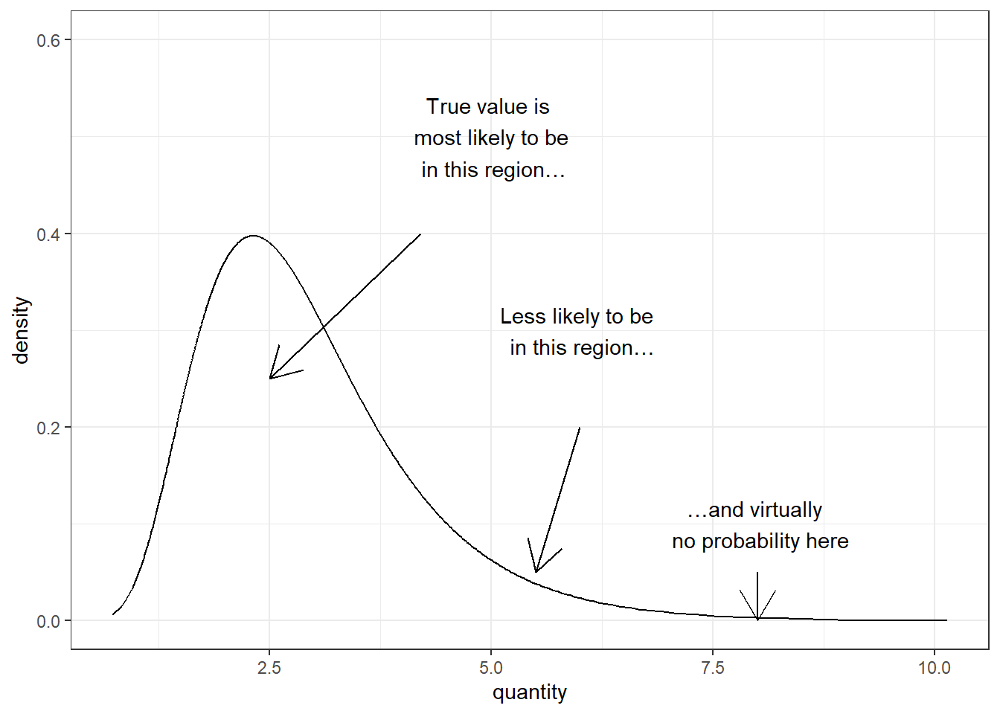
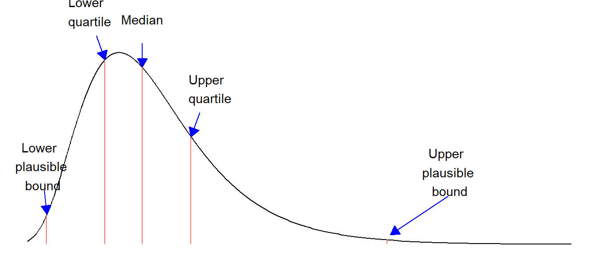
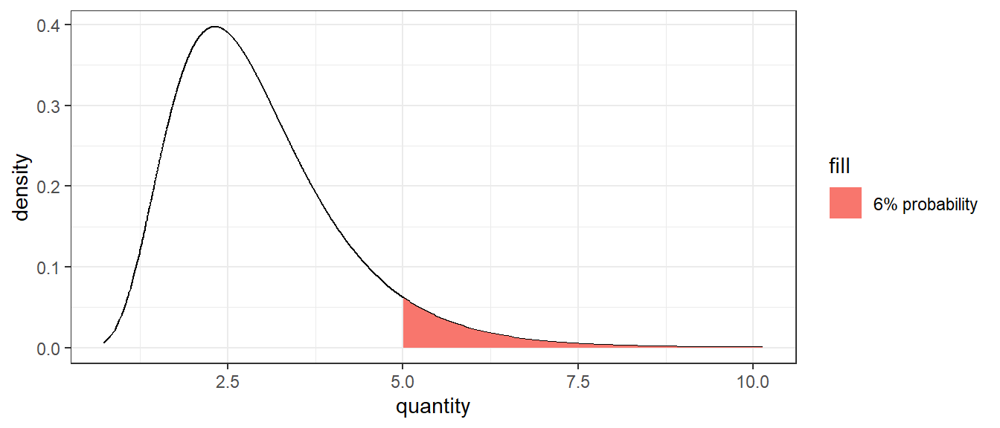
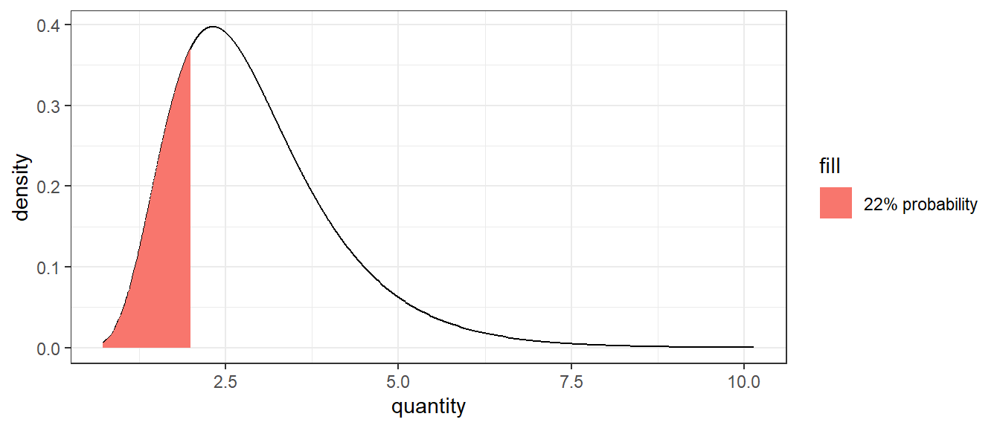
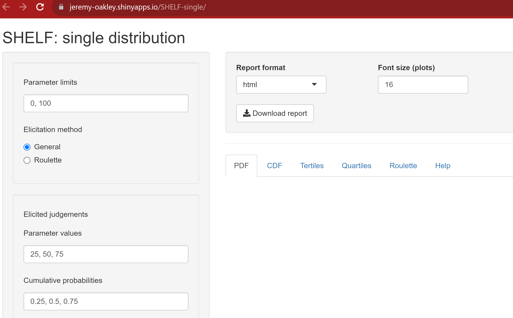
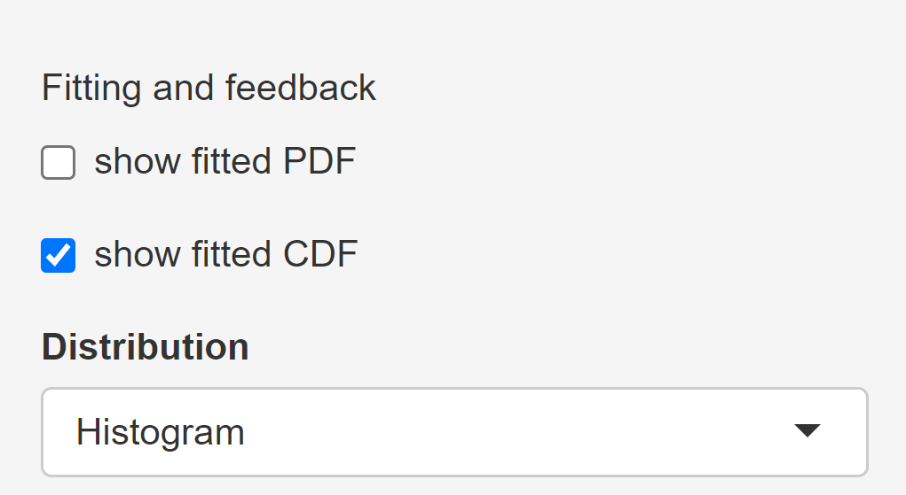
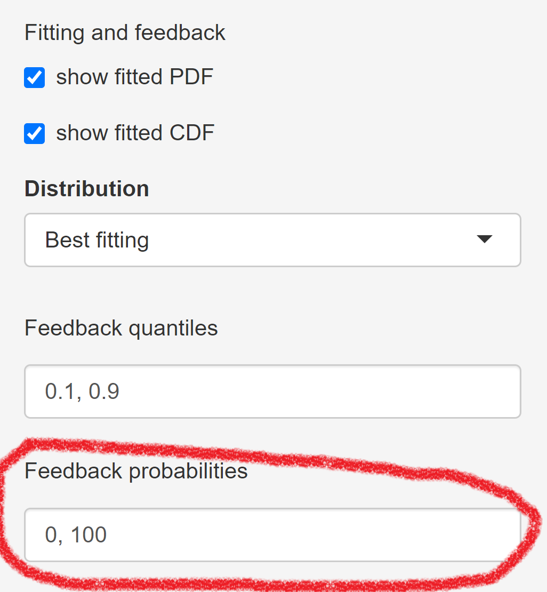

Expert judgement
MVEN10 Risk Assessment in Environment and Public Health
Exercise overview
- this is an exercise done jointly in class
Background
Expert judgement are common in risk assessment. To ensure rigour of the assessment, these judgements should be collected in a structured way. Methods have been developed to reduce linguistic uncertainty and cognitive biases when experts make judgements, and to aggregate judgements by a group of experts.
Quantitative judgements, e.g. judgements expressed by subjective probabilities are preferable over qualitative expressions of uncertainty. The reasons are that
- qualitative judgements have different meanings for different people, and
- quantitative judgements can be combined using probability rules (probability calculations)
EFSA defines Expert Knowledge Elicitation as
A systematic, documented and reviewable process to retrieve expert judgements from a group of experts, often in the form of a probability distribution.
In general, it is possible to make a quantitative judgement when the question asked to an expert is well-defined.
The expert should also feel that she has some basis to make his/her judgement.
A good expert makes judgements where she has domain knowledge and is hesitant to make judgements for questions where she feels there is not enough basis for a judgement.
It is also important that experts receive training in making probabilistic judgements to ensure they understand them.
Purpose
To get basic training in probability distributions
To demonstrate how quantitative judgements can be elicited and aggregated from experts
Content
The student receives training in making probabilistic judgements
The teacher elicit student’s judgements on a binary outcome and a continuous quantity. Judgements are anonymous.
We “test” the Wisdom of crowds by considering the aggregated judgement about an observable and compare to the true value.
Duration
45 minutes
Reporting
No need to report other than contributing with judgements
References
EFSA (2014). Guidance on Expert Knowledge Elicitation in Food and Feed Safety Risk Assessment.
Sheffield Elicitation Framework SHELF web page
Training in making probabilistic judgements
Example of how a training text to experts can look like:
As an expert you will be asked to express your uncertainty about the true value of a quantity by a probability distribution that quantifies the range and probability of possible values.
The probabilities are interpreted as your subjective probability.
Note that there is only one true value on the quantity – the distribution represents your uncertainty and not variability.
We generally use 5 judgements to elicit a full distribution
First, the lower and upper plausible bounds (P01 and P99)
then the median (P50)
and finally the lower and upper quartiles (P25 and P75)
This is done in this order to reduce the risk of bias

- In some cases it may be sufficient to elicit a single probability, e.g. that the quantity is above 5

- or below 2

Elicitation of a continuous quantity
Now we will practice doing an elicitation where you are the experts.
The elicitor (Ullrika) will introduce the quantity to be elicited in class and make sure the quantity is well defined. She will then ask you to make your judgements on a piece of paper.
Fit single distribution to judgements
We will use an online app from the SHELF software to fit and explore the judgements. Go to SHELF webpage and open the app for a single expert.

Provide your lower and upper plausible bounds by replacing the values 0 and 100 in the box Parameter limits
Provide your judgements on the median, and the lower and upper quartiles by replacing the values 25, 50 and 75 in the box Parameter values
Click on the Quartiles tab to view a visualisation of your judgements
Click on the CDF tab to view a visualisation of your judgements.
Stay on the CDF tab and tick the box show fitted CDF

Now you see a line added through the points. This “distribution” is here called a histogram (Note - it is not an actual distribution).
The software will help the elicitor to “fit” a probability distribution that represents your judgements by finding one with a CDF that is in good agreement with the points on the CDF graph.
- Click on the black triangle and select the Best fitting distribution
What type of distribution is it (name above the graph).
Do you think the CDF of the fitted distribution corresponds well to your judgements?
You can try other distributions and see how the fit looks like, but keep the best fitting when continuing.
- Now we want to see how the fitted probability distributions intended to represent your uncertainty about the quantity looks like. Tick show fitted PDF and go to the PDF tab.
The PDF representation of a probability distribution can be easier to relate to.
Do you think the PDF can be a representation of your uncertainty?
- You are welcome to change your judgements until you accept the fitted distribution
The tutor has provided an important threshold for the quantity on the board. Use the fitted probability distribution to calculate the probability that the quantity is below a value provided by the tutor!
- The quantiles P10 and P90 can be seen as bounds of a probability interval where you are 80% certain that the true value lies.
Take note of the calculated quantiles in the table to the right in the section Fitted quantiles and cumulative probabilities below the PDF graph
- Replace the 0 with the value for the critical threshold in the box Feedback probabilities

Take note of the calculated probability in the table to the right in the section Fitted quantiles and cumulative probabilities below the PDF graph
To prepare for the next step, fill in your judgements and the calculated quantiles P10 and P90 and calculated probabilities in this google form
Aggregation of expert judgements
This part of the exercise is led by the tutor (Ullrika)
She will use the SHELF online tool for multiple experts
Wisdom of the crowds
The wisdom of the crowds interesting wiki page states that pooling judgements using a trusted process from a diverse group of experts, that made their judgements independent of each other, is better than using one expert.
The tutor has the true answer
We will pool your judgments by making averages of the PDF over each point, also known as a linear pool
- Is the linear pool a better judgement?